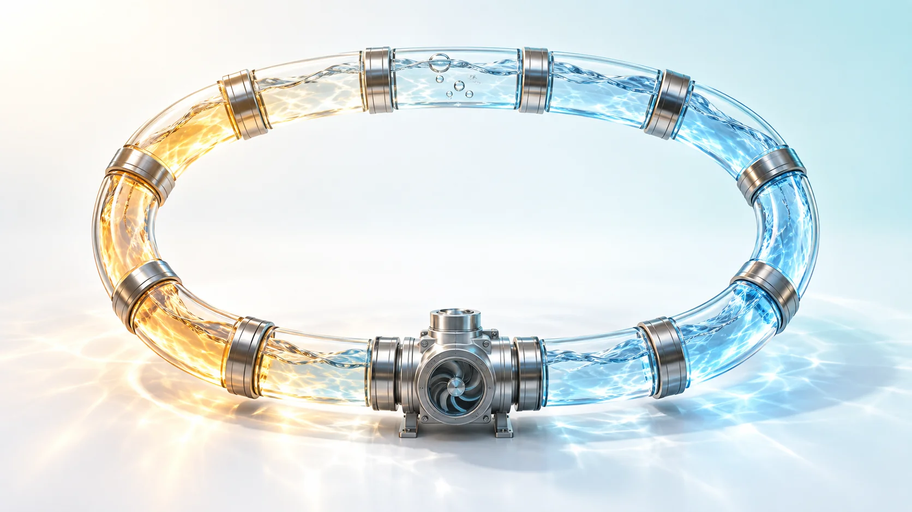
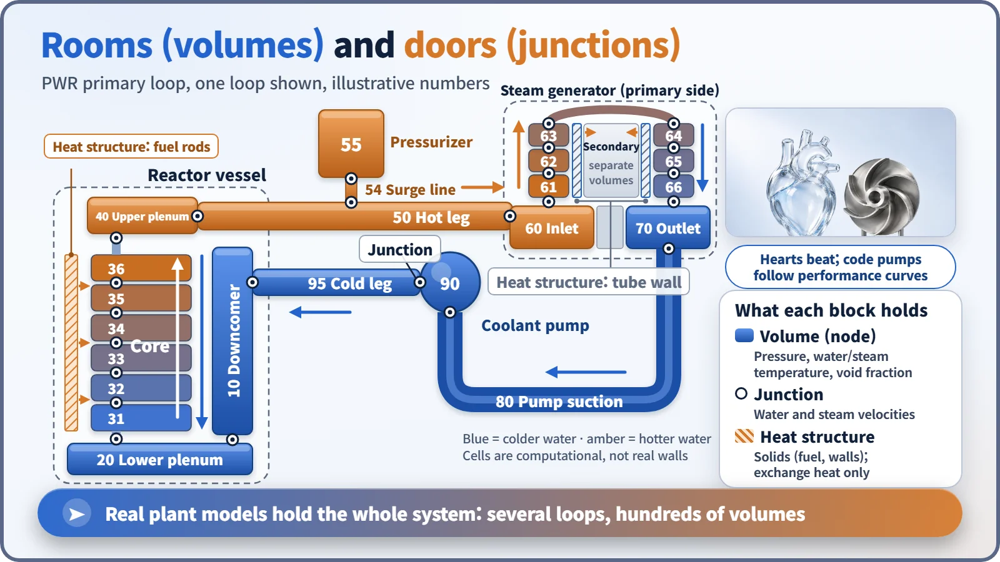
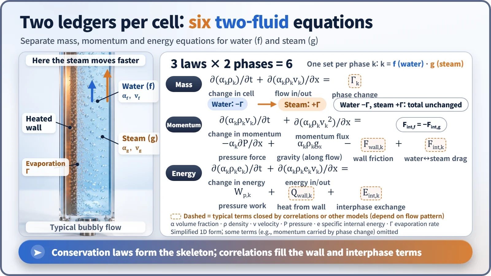

Modeling, Simulation & Computation · 264
Following the Blood Around the Body, One Compartment at a Time — What System Thermal-Hydraulic Codes Do
Like tracking blood through the body compartment by compartment, a system code follows water and steam through every room and door of a plant's cooling loops.

A system thermal-hydraulic code represents a plant's whole cooling system as a network of volumes (rooms that hold the state) and junctions (doors that hold the flow), and balances separate mass, momentum and energy books for water and steam in every cell. The conservation laws form the skeleton; experimental correlations fill in the wall and interphase terms. [1]
Following the blood, one compartment at a time
Your body holds roughly 5 liters of blood, and at rest your heart pumps about 5 liters a minute, so a drop of blood makes a lap of the body in roughly a minute. To follow that circulation on a computer, you can't draw every vessel. You divide the body into big compartments (heart, aorta, lungs, arms, legs, veins), note how much blood each holds and its pressure and temperature, and calculate how fast blood flows through each passage between them.
Nuclear power plants have programs that do exactly this: system thermal-hydraulic codes.
The heart is a pump, the vessels are pipes
A plant's primary system resembles the circulatory system. The reactor coolant pump pushes water like the heart, large pipes link the reactor and the steam generators like blood vessels, and the steam generator, where core-heated water hands its heat to the secondary-system water, is like an organ that exchanges something along the way. Valves are the heart valves; system pressure is the blood pressure.
A system code puts the entire system into one model: reactor vessel, piping, steam generators, pumps, pressurizer (a large tank that holds pressure steady), valves and emergency cooling equipment. It calculates how pressure, temperature, flow rate and steam fraction change over time, and it is used for equipment sizing, licensing accident analysis, regulators' confirmatory calculations, and as the engine of operator-training simulators.
Rooms remember the state, doors remember the flow
Chopping the system up is called nodalization. Each compartment is a volume (node); each connection is a junction. A volume holds its state: pressure, temperature, steam fraction. A junction holds the flow: how fast water and steam each pass through. [2]
Around one loop of a pressurized water reactor: water from the cold leg flows down the downcomer along the vessel wall, into the lower plenum, up through a core divided into several cells, into the upper plenum and out through the hot leg. In the steam generator it enters the inlet plenum, climbs and descends the U-tubes, and returns through the outlet plenum, the pump suction pipe and the reactor coolant pump to the cold leg. The pressurizer hangs off the hot leg on a narrow pipe.

Solids such as fuel rods and steam generator tube walls become separate heat structures, connected to neighboring volumes so they exchange only heat. Real plant models have several loops and hundreds of volumes.
Why water and steam keep separate books
Here the blood analogy stops: blood doesn't boil, but reactor coolant can in an accident. Steam bubbles escape upward much faster than the water, and the two can be at different temperatures. Average them together and you miss situations like water pooling at the bottom while only steam escapes.
So most system codes use a two-fluid model: water and steam are separate streams with their own velocities and temperatures, and every cell balances mass, momentum and energy twice, six equations in all. Whatever leaves the water's books when it evaporates is added to the steam's, so total mass is unchanged.

Experiments fill in the blanks
Some entries can't be filled in by conservation laws alone. Heat transfer from the wall, wall friction and the drag between water and steam all depend on the flow pattern: scattered small bubbles, or a water film on the wall with steam rushing through the middle. These blanks are filled with empirical correlations drawn from countless experiments. Pumps are represented by performance curves relating speed, flow and head; valves by a flow area that changes with opening. A code's skill therefore depends on the experimental range behind its correlations and on how thoroughly it has been checked against real tests.
With CFD around, why still one-dimensional?
Three-dimensional computational fluid dynamics (CFD) is a microscope for one region, such as hot and cold water mixing in the reactor vessel, using millions of cells or more. A system code is a full-body photo that uses hundreds of cells to show the whole system for hours after an accident. Modern system codes can split the vessel into three dimensions, but their skeleton is still a string of one-dimensional cells, so the two tools complement each other. Core power comes from linked neutron physics codes.
Well-known codes include RELAP5 and TRACE in the United States; MARS-KS, used by the Korea Institute of Nuclear Safety, South Korea's regulatory expert body, for confirmatory calculations; SPACE, developed in South Korea under the lead of Korea Hydro & Nuclear Power; CATHARE in France; and ATHLET in Germany. [3]
A code is not a replica of the plant
A code simplifies to one dimension, leans on correlations, and calculates on a compartment layout chosen by people. International comparison exercises have repeatedly shown that the same code gives different results depending on how the user divided the compartments and which options were chosen, and finer cells don't automatically help. That is why validated nodalization guidelines and reference models matter. [4]
Key takeaways
A system thermal-hydraulic code ties a plant's circulation together with rooms and doors and keeps separate books for water and steam. Know how the system was divided up, and you can start to judge how far to trust the results.